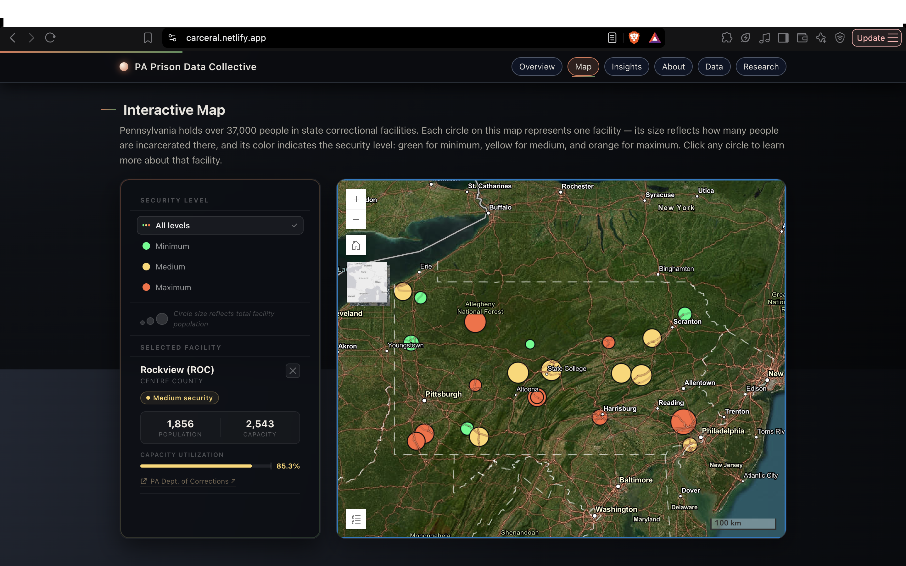

Live · Client project · Data engineering lead
Mapping PA Prisons
Pennsylvania's prison system, mapped from 50K+ incarceration records across six monthly datasets.
- Role
- Lead data engineer and Scrum Master, team of 5
- Stack
- Python, Pandas, PostgreSQL, React, ArcGIS
- Data problem
- Six monthly files that quietly changed shape
- Outcome
- Live platform, every release validated before production
- Data
- Six monthly datasets integrating population, geographic and security-level data.
- Pipeline
- I designed and maintain the ETL pipeline. I diagnosed schema drift, type mismatches, phantom columns and whitespace errors, then built ingestion validation that checks each monthly dataset independently, so problems are caught before they reach the app.
- Delivery
- Cleaned data flows to the application automatically, with month-specific data lazy-loaded for speed.
- Team
- I led a team of five as Scrum Master and main client contact, turning requests into data requirements.
PostgreSQL · Python · Pandas · ArcGIS · React · Git
Visit the platform →